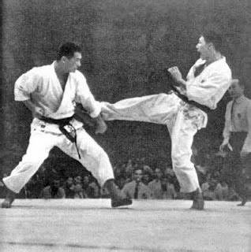
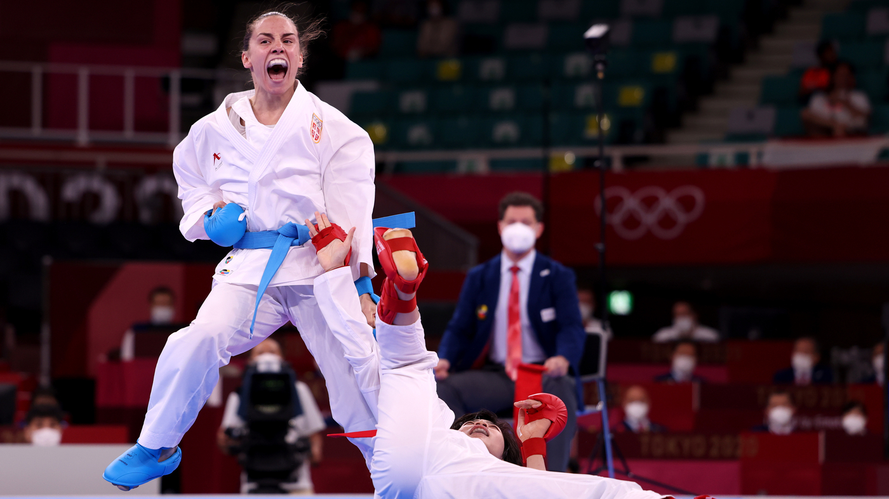
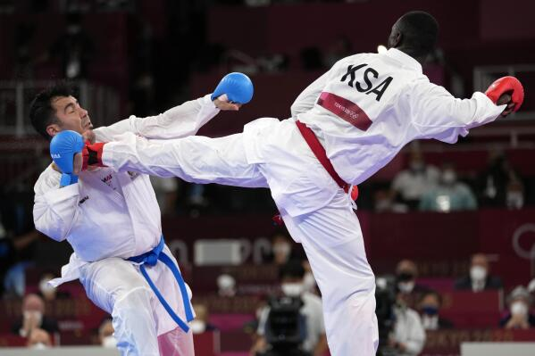

About Karate
Karate evolved in the island Okinawa over a period of centuries, becoming systematized in the 17th century, probably by people forbidden to carry weapons. It was imported into Japan in the 1920s. Several schools and systems developed, each favouring somewhat different techniques and training methods. Karate, like other Asian martial-arts disciplines, stresses mental attitude and rituals of courtesy.
Karate featured at the 2020 Summer Olympics after its inclusion at the Games was supported by the International Olympic Committee. Karate is divided into style organizations. These organizations sometimes cooperate in non-style specific sport karate organizations or federations. Examples of sport organizations include AAKF/ITKF, AOK, TKL, AKA, WKF, NWUKO, WUKF and WKC. The World Karate Federation (WKF) is the largest sport karate organization and is recognized by the International Olympic Committee (IOC) as being responsible for karate competition in the Olympic Games.
It has a complex ranking system, which is made up of colours of a belt, kyu and dan ranks. Each color is represented by a kyu or dan that represent the level of student`s knowledge. Where colored belts represent student rankings and have a kyu rank, black belt represents master ranking and it has different dan rankings. The black belt has 10 dan rankings, that go from 1st to 10th dan.
| Belt Color | White | Yellow | Orange | Red | Green | Blue | Brown | ||
| Kyu | 9. | 8. | 7. | 6. | 5. | 4. | 3. | 2. | 1. |